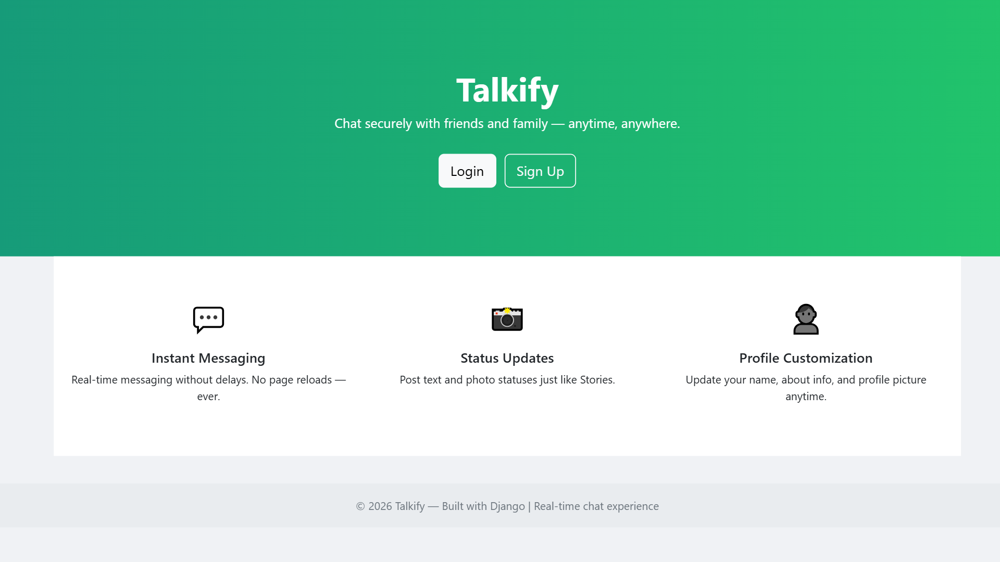

Talkify – Real-Time Chat App

Description
Talkify is a real-time chat application built with Django and WebSockets, allowing users to communicate one-to-one or in groups. It includes message editing, reactions, starred messages, unread counts, and robust group management features.
🛠 Features
Core Features
- Real-time one-to-one chat using WebSockets
- Real-time group chat with multiple users
- Delete messages for self or everyone
- Edit messages
- Message reactions (emojis)
- Starred messages
User & Profile Management
- User registration and login
- Profile editing
- Custom profile pictures
Unread Messages
- Unread message counts displayed per chat or group
- Bold usernames for chats with unread messages
Group Management
- Create, update, and delete groups
- Add/remove members
- Assign group admins
- View group details and chat history
Other Features
- Responsive UI built with Tailwind CSS
- Dark/light theme support
- Search users and messages
- Notifications for new messages
💻 Tech Stack
- Backend: Python, Django
- Frontend: HTML, Tailwind CSS, JavaScript
- Realtime: WebSockets (Django Channels)
- Database: SQLite
- Version Control: Git & GitHub